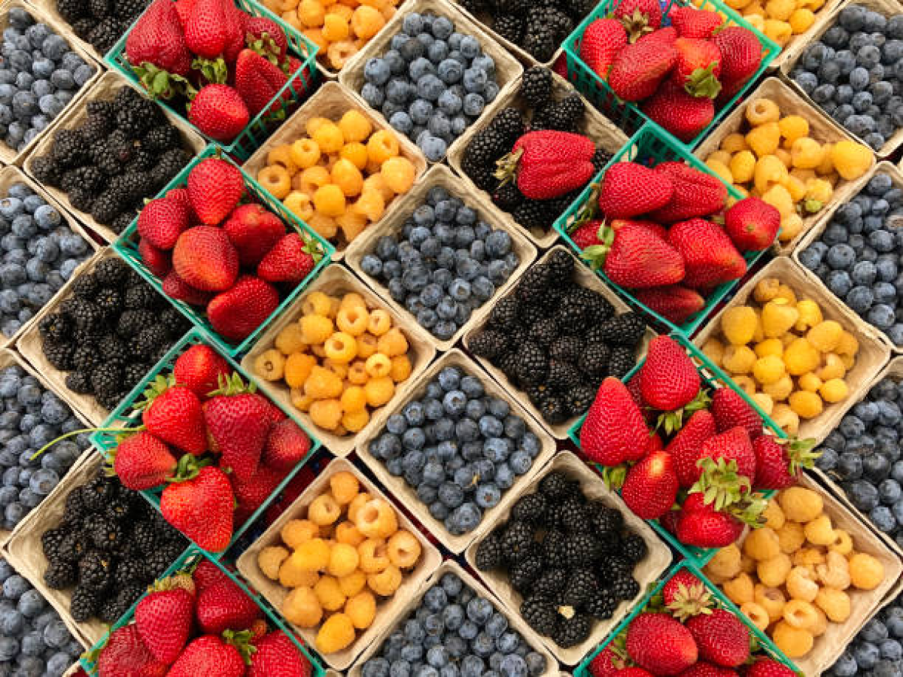

San Diego Fresh Fruits
Visitors to San Diego can drop by any of the region's many farms, located mostly in inland north county,
to purchase produce directly from the grower at roadside farm stands. Following are a few of the favorites among
local chefs - both amateur and professional:
North inland San Diego, you’ll find Farm Stand West and Fran’s Original Farm Stand. Both are owned and operated by
the Hillebrecht family since the 60’s and offer a wide variety of fruits and vegetables grown on the family farm.
Open year-round, they feature seasonal selections such as avocados, apricots, citrus, sweet peas, and local raw honey and nuts.